Versal Dhrystone Benchmark User Guide¶
Table of Contents¶
Introduction¶
Versal™ ACAP combines adaptable processing and acceleration engines with programmable logic and configurable connectivity to enable custom, heterogeneous hardware solutions for a wide variety of applications in data center, automotive, 5G wireless, wired network, and defense.
This tutorial provides step-by-step instructions for generating a reference design for the Dhrystone benchmark and building and running the Dhrystone application.
Objectives¶
After completing this tutorial, users can:
Generate programmable device image (PDI) for tutorial design.
Build a Dhrystone application and execute it on the VCK190 evaluation kit.
Calculate Dhrystone performance number.
Directory Structure¶
.
└── Dhrystone
├── Design.......................Contains Vivado design scripts
│ ├── design.tcl..................................Generates reference design PDI/XSA
│ └── run.tcl.....................................Top tcl for project setup, calls design.tcl
├── Images.......................Contains images that appear in README.md
│ ├── apu_clock_configuration.png.................APU clock configuration
│ ├── axi_noc_0_configuration_ddr_basic.png.......DDR basic configuration
│ ├── axi_noc_0_connectivity.png..................NoC0 connectivity
│ ├── axi_noc_0_ddr_configuration.png.............DDR memory configuration
│ ├── axi_noc_0_general.png.......................NoC0 general configuration
│ ├── axi_noc_0_inputs.png........................NoC0 input clock configuration
│ ├── browse_and_add_xsa.png......................Add XSA
│ ├── browse_import_source_code_finish.png........Complete importing source code
│ ├── build_complete.png..........................Build complete
│ ├── build_project.png...........................Build project
│ ├── configure_domain_settings.png...............Domain settings
│ ├── create_a_new_application_project.png........Start new application project
│ ├── create_application_project.png..............Create new application
│ ├── create_empty_application_template.png.......Create application template
│ ├── create_hardware_description.png.............Hardware description window
│ ├── debug_level_none.png........................Add debug level
│ ├── download_and_run_dhrystone_application.png..Download and run Dhrystone application
│ ├── expand_and_view_source_files.png............Browse and view source code
│ ├── import_source_code.png......................Import source code
│ ├── launch_xsct_and_connect_board.png...........Launch XSCT and connect to board
│ ├── name_new_application_project.png............Added new application
│ ├── optimization_optimize_most_O3.png...........Add optimization level
│ ├── optimization_properties.png.................Go to optimization properties
│ ├── processor_cips_block_diagram.png............CIPS block diagram
│ ├── program_pdi.png.............................Load the PDI over JTAG
│ ├── project_template.png........................Added project template
│ ├── select_a72_0_target_and_reset.png...........Select A72_0 and Reset
│ ├── source_run_tcl.png..........................Source run.tcl in Vivado
│ ├── vck190_sw1_jtag_bootmode.png................VCK190 JTAG boot mode settings on SW1
│ └── vck190_targets_list.png.....................List the VCK190 targets
├── README.md....................Includes tutorial overview
└── Source_code..................Source code for Dhrystone application
├── dhry_1.c
├── dhry_2.c
├── dhry.h
├── LICENSE
└── README.md
Prerequisites¶
Recommended general knowledge of:
VCK190 evaluation board
Versal JTAG boot mode
Xilinx® Vivado® Design Suite
Vitis™ Unified Software Platform Tool
Key Versal reference documents
VCK190 Evaluation Board User Guide (UG1366)
Versal ACAP Technical Reference Manual (AM011)
Versal ACAP System Software Developers Guide (UG1304)
Control Interfaces and Processing System v3.0 (CIPS) (PG352)
Key Dhrystone documents
Tutorial Requirements¶
This tutorial is demonstrated on the VCK190 evaluation kit. Install the necessary licenses for Vivado, Vitis, and XSCT/XSDB tools. Contact your Xilinx sales representative for any assistance. For more information, see https://www.xilinx.com/products/boards-and-kits/vck190.html.
Hardware Requirements¶
A host machine with an operating system supported by Vivado Design Suite, Vitis tool, and XSCT/XSDB.
VCK190 EV2 evaluation board with:
Versal ACAP EK-VCK190-G-ED.
AC power adapter (100-240VAC input, 12VDC 15.0A output).
System controller microSD card in the socket (J302).
USB Type-C cable (for JTAG and UART communications).
Software Requirements¶
The following tools are necessary to build the tutorial design and execute the Dhrystone application:
Vivado Design Suite and Vitis tool
For the latest tool version details, see https://www.xilinx.com/support/download.html.
For more information on installation, see UG1400 Vitis Unified Software Platform Embedded Software Development.
The Build Tutorial Design section of this document provides the scripts to create the tutorial design.
UART serial terminal recommended:
Vitis serial terminal or a terminal emulator program for UART (Putty or Tera Term) can be used to display the valuable PLM log boot status and the Dhrystone Benchmark logs.
Build the Tutorial Design¶
Follow these steps to build the Dhrystone Benchmark design and create the PDI/XSA.
Copy the Design directory and files to a local project directory. The following is a snippet of the top-level directory:
Performance_Benchmark/Dhrystone/└── Dhrystone ├── Design │ ├── design.tcl │ └── run.tclLaunch Vivado Design Suite.
In the Vivado Tcl console, cd to the tutorial directory:
/<Path to workspace>/Performance_Benchmark/Dhrystone/Design/).
Source
run.tclfrom the tutorial directory.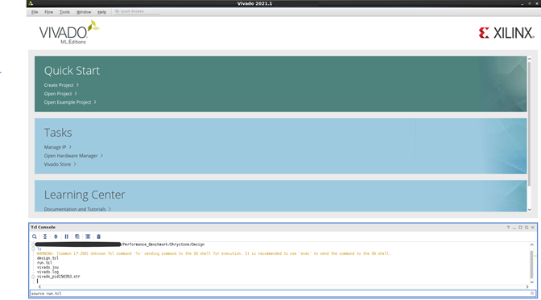
Sourcing the
run.tclscript does the following:Creates a project directory
Sources and runs the
design.tcl, which in turn does the following:Selects the target Versal VC1902 device
Creates IPs and ports
Creates blocks
Configures and connects IP (Control, interfaces, and processing system (CIPS), Smartconnect)
Runs placement and routing
Creates a programmable device image (PDI) and Xilinx Support Archive (XSA).
You can find PDI and XSA at:
PDI - /<path for workspace>/Performance_Benchmark/Dhrystone/Design/runs/dperf_<*>/dhrystone_tutorial.runs/impl_1/dhrystone_perf_wrapper.pdi XSA - /<path for workspace>/Performance_Benchmark/Dhrystone/Design/dhrystone_tutorial.xsa
Hardware Design Details¶
The tutorial design creates a block design with CIPS-IP and NoC IP upon sourcing the run.tcl script. The following image shows the details of the IP configuration.
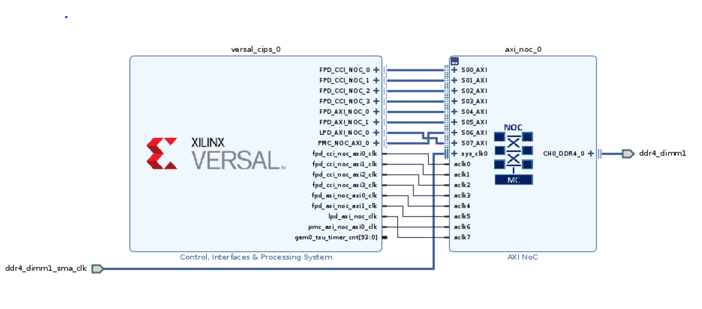
APU Clock Configuration¶

NoC Interfaces Details¶
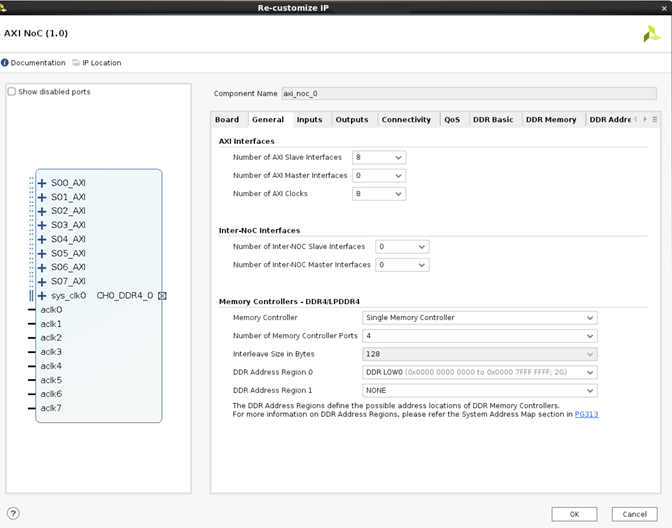
NoC Inputs¶
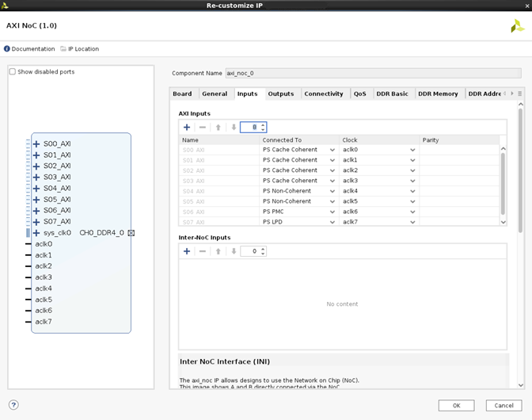
NoC Port Connectivity¶
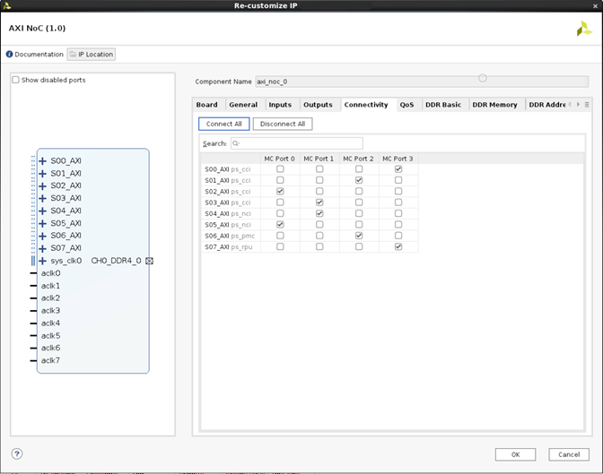
DDR Configurations¶
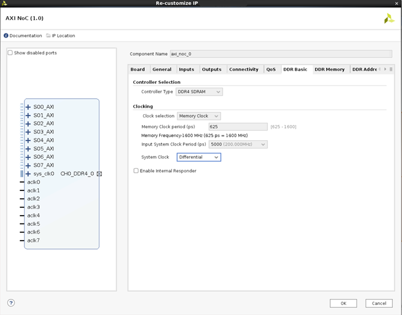
DDR Memory Options¶
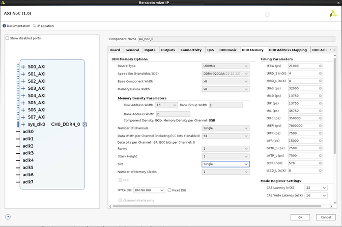
Create a New Application Project for Dhrystone¶
Create and Browse to the Workspace¶
Create a workspace and launch the Vitis tool.
Browse to the workspace.
Click Launch to open the VITIS IDE wizard.
Browse to
/<path for workspace>/Performance_Benchmark/Dhrystone/.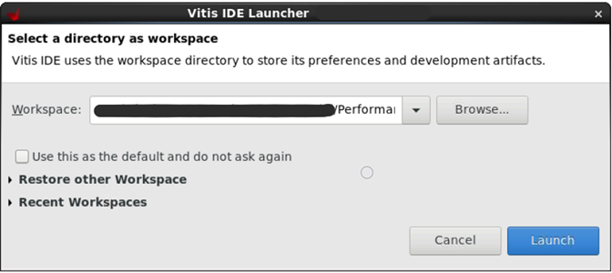
Create the Application Project¶
Select File->New->Application Project from the menu. Alternatively, you can create the project by clicking Create Application Project.
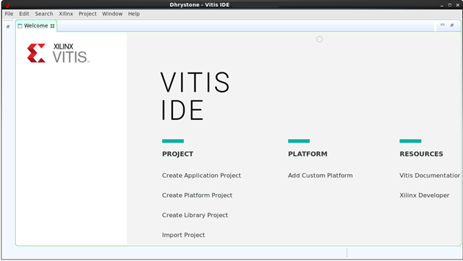
On the New Application Project wizard, click Next.
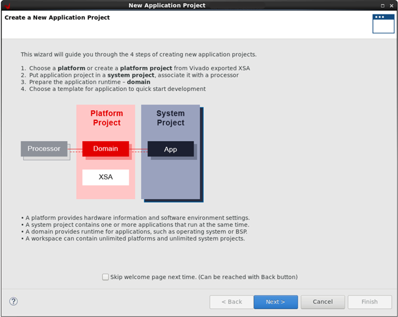
Add Hardware Description File¶
To add the hardware description file (XSA), select Create a new platform from hardware (XSA).
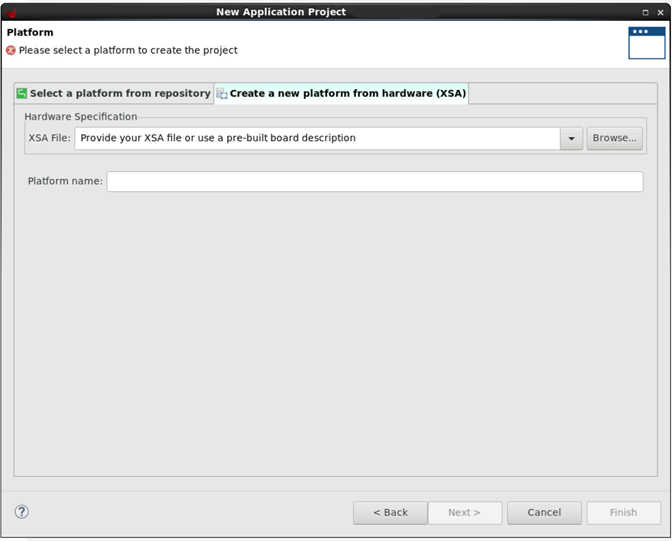
Browse to the XSA file and click Next to open the New Application Project wizard.
/<path for workspace>/Performance_Benchmark/Dhrystone/Design/dhrystone_tutorial.xsa
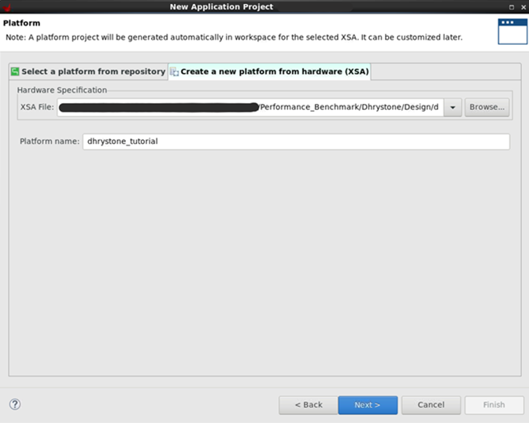
Create Dhrystone application¶
Set Domain Configuration¶
For the Application project name, enter Dhrystone.
Select the psv_cortexa72_0 processor, and click Next.
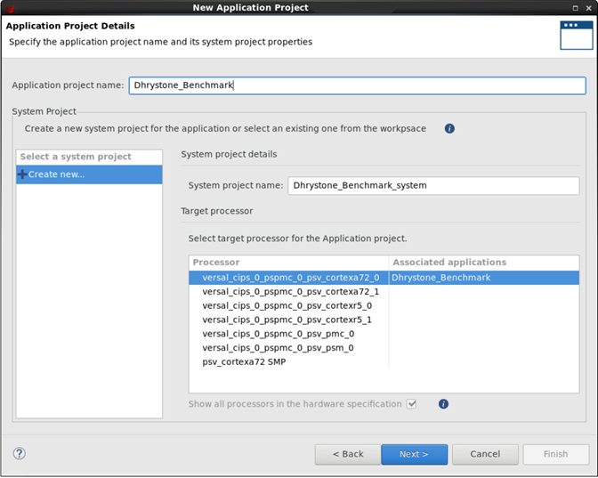
Select the domain details and then click Next.
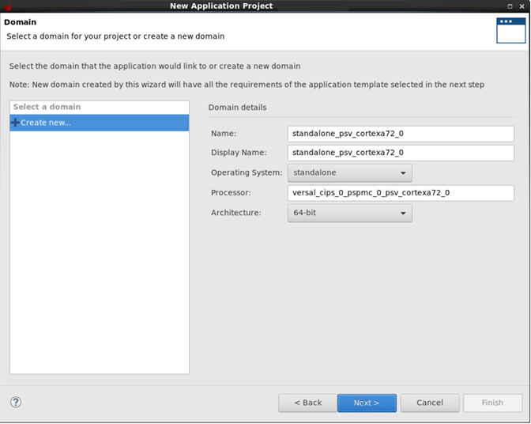
Create Empty Application Template¶
Select the Empty Application template (blank c project) for Dhrystone application.
Click Finish.
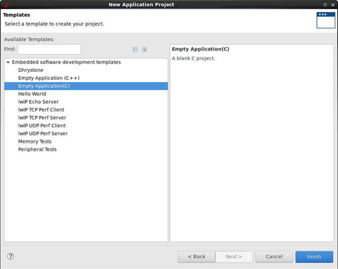
After creating the project, the application project template looks as shown in the following image.
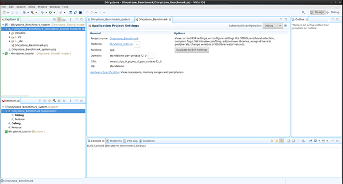
Import Dhrystone Source Code¶
To import the Dhrystone source code to the project, right-click src->import sources.
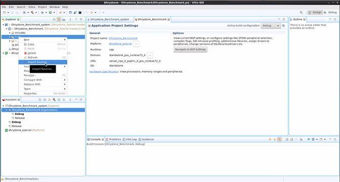
Browse to the source path
/<Path to workspace>/Performance_Benchmark/Dhrystone/Source_code/Select all the source files and click Finish to import.
Click Yes to All.
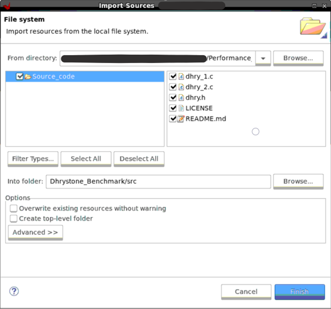
All the source files are imported, as shown in the following image.
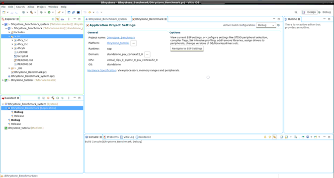
Build Dhrystone Application¶
Set Optimization Level¶
Note: Add the optimization Level -O3 and -fno-common for better performance.
Right-click the Dhrystone project and click Properties.
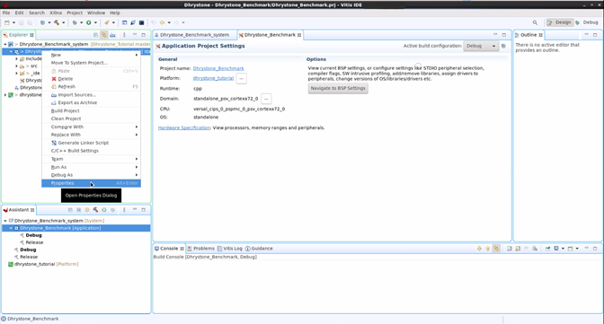
Expand C/C++ Build and click Settings.
Click Optimization, and then select the Optimization Level -03.
Add -fno-common in the Other optimization flags.
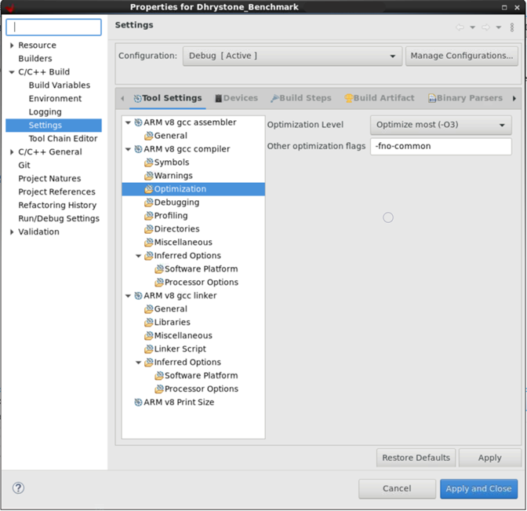
Set Debug Level¶
Navigate to Properties->C/C++Build->Settings->Debugging.
Select Debug Level as None.
Click Apply and Close and build the project.
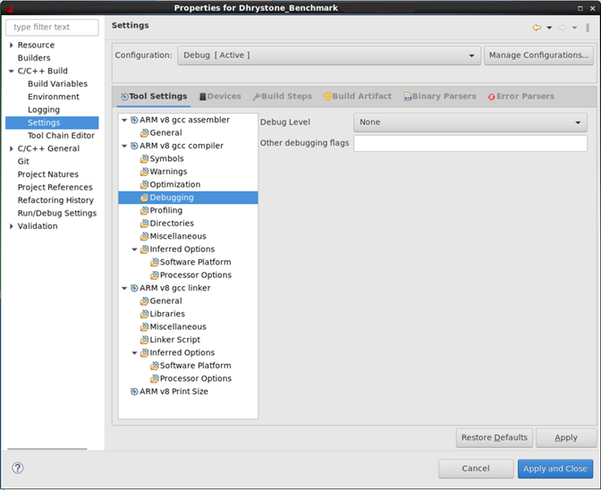
Build the Project¶
Right-click the project name, and then click Build Project. Alternatively, navigate to the Project menu and click Build Project.
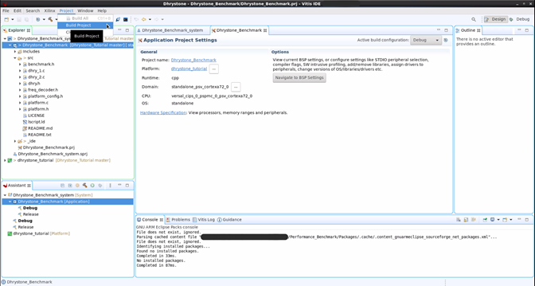
After the build is over, the executable is generated.
Verify the build logs in the console.
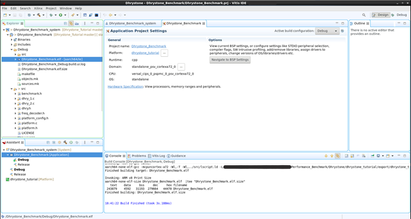
For executable file path:
/<path for workspace>/Performance_Benchmark/Dhrystone/Dhrystone_Benchmark/Debug/Dhrystone_Benchmark.elf
Run the Dhrystone Application¶
Insert the SD card with the system controller image into the System controller boot mode to SD1 (SW11 = 0111).
On the host machine, connect the USB Type-C cable into the VCK190 Board USB Type-C port (J207) and the other end into an open USB port.
Configure the board to boot in JTAG mode by setting switch SW1 = 0000 as shown in the following image.

Connect 180W(12V) power to the VCK190 6-Pin Molex connector(J16).
Power on the VCK190 board using the power switch (SW13).
Open the serial port in Tera Term/Putty and set baud rate(115200) for logs.
Go to Vitis command prompt, run
xsdborxsctcommands. Note: Refer Vivado/Vitis installation paths for this tools.Run the
connectcommand to launch hw_server.
List the targets by running the
targetscommand.
Program the design.
xsct% device program /<path for workspace>/Performance_Benchmark/Dhrystone/Design/runs/dperf_<*>/dhrystone_tutorial.runs/impl_1/dhrystone_perf_wrapper.pdi

Select the A72_0 target and reset.
xsct% rst -processor -skip-activate-subsystem

Download and run the Dhrystone benchmark application.
Before executing Dhrystone Benchmark, see 4 Running Dhrystone section of the Dhrystone Benchmarking for ARM Cortex Processors- https://developer.arm.com/documentation/dai0273/a/
xsct% dow -force /<path for workspace>/Performance_Benchmark/Dhrystone/Dhrystone_Benchmark/Debug/Dhrystone_Benchmark.elf xsct% con

For performance number calculation, use the Dhrystones per second value from the last UART log print (highlighted in the previous image).
Performance Calculation¶
Calculate DMIPS (Dhrystone MIPS) number by using the following formula:
DMIPS = Dhrystones per second / 1757
= 14285565/1757
= 8130.6573
A more commonly reported figure is DMIPS / MHz, where MHz is CPU Frequency
i.e 8130.6573/1400 = 5.80
Note:
For more details on the formula, see 5 Measurement characteristics of Dhrystone Benchmarking for ARM Cortex Processors - https://developer.arm.com/documentation/dai0273/a/
For CPU Frequency configured in design, see the APU clock configuration section.
Support¶
GitHub issues will be used for tracking requests and bugs. For questions go to forums.xilinx.com.
License¶
Licensed under the Apache License, Version 2.0 (the “License”); you may not use this file except in compliance with the License.
You may obtain a copy of the License at http://www.apache.org/licenses/LICENSE-2.0
Unless required by applicable law or agreed to in writing, software distributed under the License is distributed on an “AS IS” BASIS, WITHOUT WARRANTIES OR CONDITIONS OF ANY KIND, either express or implied. See the License for the specific language governing permissions and limitations under the License.
XD071 | © Copyright 2021 Xilinx, Inc.